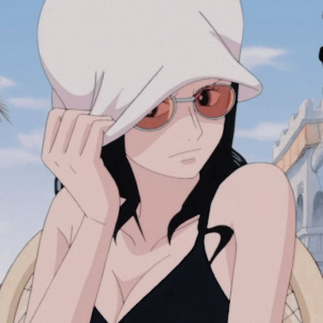

Robin
Também conhecida como "Criança Demônio" e "Luz da Revolução", é a arqueóloga dos Piratas do Chapéu de Palha.Ela foi introduzida pela primeira vez como o vice-presidente da Baroque Works e antagonista secundária da Saga Alabasta, conhecida como Miss All Sunday, antes de se juntar aos Chapéus de Palha. Ela é a sétima integrante da tripulação, a sexta a se unir e, como Nami, é a segunda a reentrar, chegando perto do final do Arco Enies Lobby. Robin também é o primeiro membro a ter sido um antagonista. Ela comeu a Hana Hana no Mi.